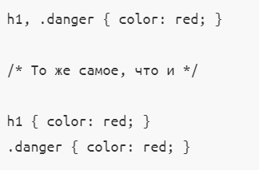

CSS - это каскадные таблицы стилей , которые например используются для визуального оформления вашего сайта.
CSS можно писать внутри HTML-документа в теге style , распологающемся в head ,
но более правильно это делать в отдельном файле .css и подключать его в html документ при помощи link
Cинтаксис CSS
CSS-файл состоит из CSS-правил.
Само же CSS правило состоит из селектора и задаваемых ему свойств со значениями.
Селекторы
Селекторы тегов
Один из "типов" селекторов - это тег.Например , если в HTML-файле вы задали заголовок h2
и хотите ему задать цвет , то можно как селектор взять этот тег и в CSS указать h2
Селекторы классов
Еще один "тип" селекторов - это селекторы класса.Если например вы хотите задать фон блоку div с классом (div class="name"),
то в CSS файле перед указание селектора должен быть символ (.).
ID селектор
Принцип работы как у селектора класса , только за место класса в HTML-файле указывается id ,
а в CSS вместо "." ставится "#"
Группировка селекторов
Если задаваемы свойства и значения используются одинаковые для несколько селекторов ,
то можно перечислить селекторы через запятую.

Вложенные селекторы
Часто бывает так , что в HTML коде в один тег вкладывается другой(напремер в nav вложен теги а и p) , а в документе теги а
используется не один раз , но нужно вам задать стиль только для a в nav , то можно вложить селектор в селектор в CSS